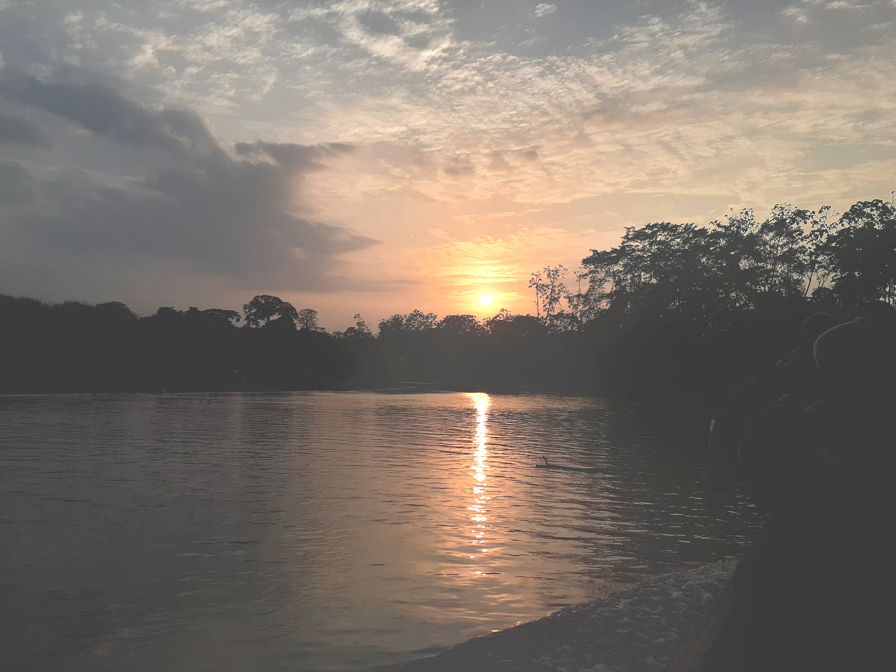

CONOCE ALGUNOS DE LOS SITIOS
Los sitios más reconocidos para ir a realizar turismos están:
- Boquete, Volcán, Cerro Punta, en la provincia de Chiriquí.
- Playa Santa Catalina, La Yeguada, en Veraguas.
- El Valle de Antón en Coclé.
- Pedasí, en la provincia de Los Santos.
- Las playas del atlántico en Colón.
- Playas de Guna Yala.
